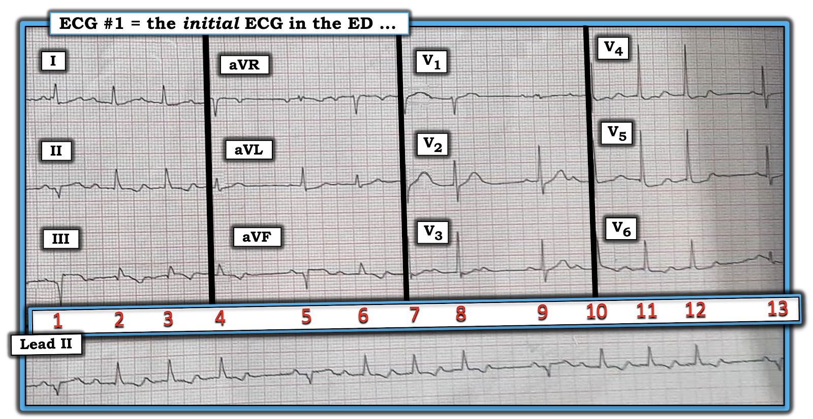
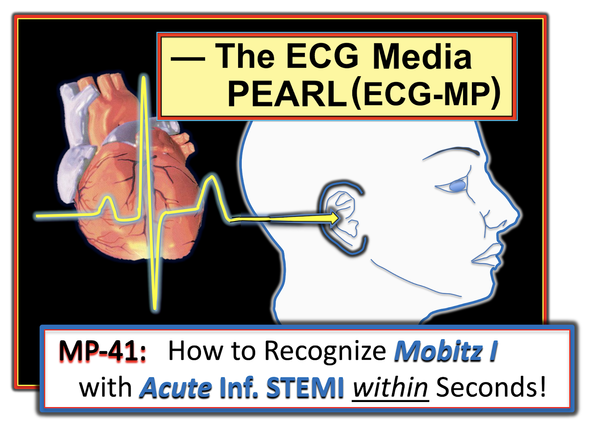
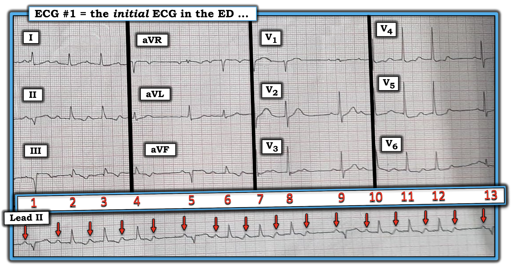
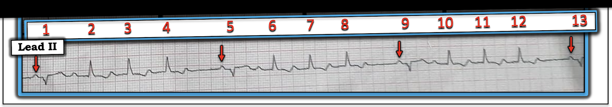
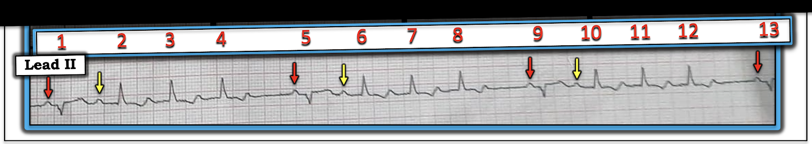
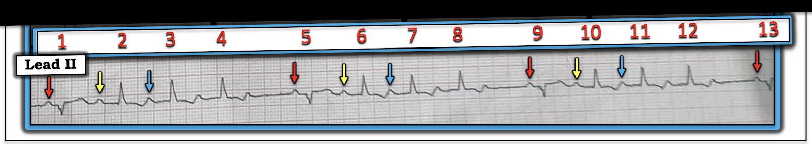
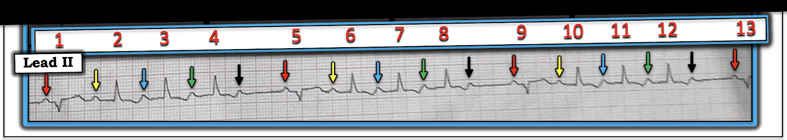
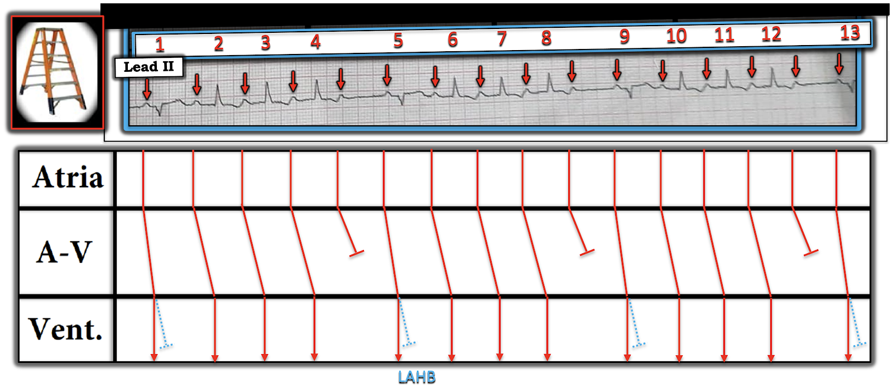

ECG Blog #295 — Vì sao nhát thứ 1 lại khác biệt?
Điện tâm đồ ở Hình-1 được ghi từ một bệnh nhân lớn tuổi có đau ngực mới xuất hiện.
- Nguyên nhân của nhịp này là gì?
- TẠI SAO nhát thứ 1 luôn luôn khác biệt?


=======================================
LƯU Ý #1: Bản ghi này là ảnh chụp bằng điện thoại thông minh được gửi cho tôi để xin nhận xét. Đó là lý do bản ghi bị nghiêng và hơi méo. Dù vậy — tôi tin rằng hình ảnh vẫn đủ tốt để đọc chính xác.
=======================================
LƯU Ý #2: Đến đây, một số bạn đọc có thể muốn nghe ECG Audio PEARL dài 3:45 phút trước khi đọc Suy nghĩ của tôi về điện tâm đồ ở Hình-1. Bạn có thể xem Suy nghĩ của tôi về bản ghi này vào bất kỳ lúc nào (nằm bên dưới ECG MP-41a).
=======================================


Hôm nay: ECG Media PEARL #41a (3:45 phút Audio) — Ôn lại CÁCH nhận ra chỉ trong vài giây (!!!) một blốc AV độ 2 Mobitz I (Wenckebach AV), trong bối cảnh đang có STEMI thành dưới.
SUY NGHĨ CỦA TÔI về điện tâm đồ ở Hình-1:
Bản ghi này có 2 phần: i) Nhịp tim (thể hiện ở dải nhịp (rhythm strip) DII dài); và, ii) Điện tâm đồ 12 chuyển đạo phía trên nó. Tôi thường thích bắt đầu đánh giá ban đầu bằng cách ít nhất liếc qua dải nhịp dài — dù đôi khi (như ở ca hôm nay) — tôi cần chuyển sự chú ý sang điện tâm đồ 12 chuyển đạo được ghi đồng thời để hoàn tất việc đánh giá nhịp tim.
- Ấn tượng ban đầu của tôi khi nhìn dải nhịp DII dài ở Hình-1 — là có nhịp theo nhóm (group beating)! Tức là — ta thấy 3 nhóm, mỗi nhóm có 4 nhát — và mỗi nhóm có thời điểm tương tự nhau.
- Đáng chú ý — nhát thứ 1 trong mỗi nhóm (tức là các nhát #1, 5, 9 13) trông khác các nhát còn lại trong nhóm!
- Cũng đáng chú ý — là thời gian của mỗi khoảng ngưng ngắn trong nhịp này (tức là các khoảng R-R giữa nhát #4-5; 8-9; và 12-13) đều bằng nhau. Rõ ràng là khuôn mẫu nhịp nhàng này không phải do ngẫu nhiên!
Tiếp tục cách tiếp cận đánh giá nhịp — tiếp theo tôi xét đến 5 thông số MẤU CHỐT (Xem ECG Blog #185 để ôn lại Cách tiếp cận Ps, Qs, 3R mà tôi ưa dùng để đọc nhịp):
- Có sóng P! Đáng chú ý — ít nhất một số sóng P này có liên hệ với các phức bộ QRS kế cận (tức là các khoảng PR đứng trước nhát #1, 5, 9 và 13 bằng nhau — do đó các nhát này có “liên quan” (Related) — theo nghĩa các sóng P này được dẫn truyền xuống thất).
- Phức bộ QRS hẹp ở mọi nơi! Để kiểm chứng — tôi đã xem tất cả các nhát ở từng chuyển đạo trong 12 chuyển đạo của điện tâm đồ phía trên dải nhịp dài.
- 2 thông số còn lại là Tần số (Rate) và Tính đều (Regularity). Chúng ta đã bàn về “tính đều” — theo nghĩa nhịp có một “sự không đều có quy luật” (tức là một “khuôn mẫu” — dưới dạng nhịp theo nhóm (group beating)).
- Về thông số "Tần số (Rate)" — Tần số thất thay đổi. Để xác định LIỆU Tần số nhĩ có đều không — trước hết ta cần hoàn tất việc tìm sóng P.
ĐIỂM THEN CHỐT (PEARL) #1: Tôi xin nhấn mạnh rằng một trong những việc hữu ích nhất khi đánh giá các rối loạn nhịp phức tạp — là đánh dấu sóng P. Việc này thường DỄ làm khi dùng compa đo (calipers). Chỉ cần đặt compa bằng khoảng P-P giữa 2 sóng P liên tiếp bất kỳ mà bạn chắc chắn — rồi xem LIỆU bạn có thể “dò bước” sóng P suốt phần còn lại của bản ghi hay không.
- Ở Hình-2 — ta chắc chắn phân biệt được 2 sóng P đầu tiên trên dải nhịp dài (tức là 2 mũi tên ĐỎ đầu tiên ở Hình-2). Hãy để ý mỗi mũi tên ĐỎ tiếp theo đều rơi vào một độ lệch giống sóng P (kể cả khi nó nằm trong sóng ST-T) — trên toàn bộ dải nhịp. Như vậy, nhịp nhĩ đều với Tần số ~100/phút!
- Giờ đây khi đã đánh dấu tất cả sóng P của nhịp hôm nay bằng mũi tên ĐỎ — Chẳng phải là dễ hơn nhiều để đánh giá mối liên hệ có thể có giữa mỗi sóng P này với QRS kế cận của nó hay sao?


Hình-2: Tôi đã đánh dấu sóng P bằng mũi tên ĐỎ. Nhịp nhĩ đều ~100/phút. CÂU HỎI: Trên điện tâm đồ 12 chuyển đạo có bằng chứng của nhồi máu cơ tim (MI) thành dưới cấp không? (Xem phần bàn luận bên dưới!).
========================
ĐIỂM THEN CHỐT (PEARL) #2: Việc phát hiện nhịp theo nhóm ở một nhịp có nhịp nhĩ đều phải ngay lập tức gợi ý khả năng có một dạng dẫn truyền Wenckebach nào đó.
- Khả năng là Wenckebach AV ( = blốc AV độ 2 loại Mobitz I) — trở nên cao hơn nhiều khi nhịp theo nhóm ở một nhịp có nhịp nhĩ đều xảy ra trong bối cảnh MI thành dưới cấp.
- Để xem các ví dụ lâm sàng về MI thành dưới cấp kèm blốc AV độ 2 Mobitz I ( = Wenckebach AV) — Xem ECG Blog #55 — ECG Blog #154 — ECG Blog #224 — và ECG Blog #232.
LƯU Ý: Đến thời điểm này trong quá trình đọc — tôi chuyển sự chú ý khỏi dải nhịp DII dài, để tập trung vào điện tâm đồ 12 chuyển đạo.
- Tôi làm vậy vì NẾU bệnh nhân hôm nay (đến khám vì đau ngực mới xuất hiện) đang trong quá trình tiến triển một MI thành dưới cấp — thì ngay cả trước khi hoàn tất đánh giá nhịp phức tạp ở Hình-2 — xác suất thống kê để nhịp này rốt cuộc là một dạng Wenckebach AV nào đó sẽ tăng lên rất nhiều (và việc biết điều này sẽ giúp tôi dễ tìm ra bằng chứng xác nhận hơn nhiều khi quay lại đọc lần cuối nhịp phức tạp này)!
CÂU HỎI:
- BẠN có thấy bằng chứng của MI thành dưới cấp đang tiến triển trên điện tâm đồ 12 chuyển đạo ở Hình-2 không?
TRẢ LỜI:
Chúng ta đã ghi nhận những điểm sau về điện tâm đồ hôm nay: i) Có 2 hình dạng QRS khác nhau được thấy trong bản ghi này; ii) Mọi nhát trên điện tâm đồ 12 chuyển đạo đều hẹp — nghĩa là tất cả các nhát đều là trên thất; và, iii) Việc khoảng PR đứng trước mỗi nhát kết thúc một khoảng ngưng ngắn đều bằng nhau (tức là khoảng PR trước nhát #1, 5, 9 và 13 là như nhau!) — có nghĩa là 4 nhát này chắc chắn được dẫn truyền!
- Hãy tập trung vào sóng ST-T của nhát #1 ở chuyển đạo II và III được ghi đồng thời — và của nhát #5 ở chuyển đạo aVF và aVL được ghi đồng thời. Đoạn ST của các nhát này ở cả 3 chuyển đạo dưới đều chênh lên — kèm hình ảnh ST chênh xuống soi gương (reciprocal) đối xứng ở chuyển đạo aVL. Điều này chẩn đoán MI thành dưới cấp.
- Tôi thấy thú vị là bằng chứng điện tâm đồ của MI thành dưới cấp này dễ nhận ra hơn nhiều ở nhát #1 và 5 — so với nhát #2,3,4 và 6.
- Ở các chuyển đạo trước ngực — nhát #9 ở chuyển đạo V1,V2,V3 được ghi đồng thời gợi ý đang có MI thành sau cấp (tức là vùng chuyển tiếp sớm với QRS đẳng điện rất nhỏ ở chuyển đạo V1, và sóng R đã chiếm ưu thế ngay từ chuyển đạo V2 — kèm ST chênh xuống ở chuyển đạo V2, nhưng không có ở chuyển đạo V1).
- Vì điện tâm đồ 12 chuyển đạo bị cắt đột ngột sau phức bộ QRS của nhát #13 — ta không thấy rõ sóng ST-T của nhát cuối này ở các chuyển đạo trước ngực bên. Nhưng rõ ràng có ST chênh xuống bất thường ở chuyển đạo V4, V5, V6 của nhát #11 và 12.
- Tổng hợp tất cả lại: Tôi đọc điện tâm đồ 12 chuyển đạo ở Hình-2 là chẩn đoán MI dưới-sau cấp. Việc không có ST chênh xuống ở chuyển đạo V1 gợi ý kèm theo tổn thương thất phải (RV involvement) cấp — điều này gợi ý mạnh rằng động mạch "thủ phạm" là RCA đoạn gần (động mạch vành phải — Right Coronary Artery — Xem ECG Blog #190, bao gồm cả Audio Pearl trong bài này để biết thêm về cách nhận ra RV MI cấp trên điện tâm đồ).
======================
LƯU Ý: Kết quả Thông tim của bệnh nhân hôm nay đã xác nhận nghi ngờ lâm sàng của tôi. Có bệnh lý lan tỏa của RCA (gồm các đoạn gần, giữa và xa hơn) — với tắc hoàn toàn, xác nhận đây là mạch "thủ phạm". Ngoài ra — còn có bệnh nhiều nhánh mạch dưới dạng tổn thương 80% LAD đoạn giữa và tổn thương 70-80% LCx.
======================
LƯU Ý: Đến thời điểm này trong quá trình đọc — tôi chuyển sự chú ý trở lại dải nhịp DII dài — để hoàn tất việc đánh giá nhịp tim.
- ĐIỂM THEN CHỐT (PEARL) #3: "Được trang bị" hiểu biết rằng điện tâm đồ 12 chuyển đạo cho thấy nhồi máu thành dưới cấp — tôi gần như đã biết rằng nhịp theo nhóm với nhịp nhĩ đều mà ta thấy trên dải nhịp DII dài sẽ là một dạng Wenckebach AV nào đó.
- 4 Hình tiếp theo tôi trình bày minh họa quá trình suy luận của tôi bằng các mũi tên màu. Tôi xin nhấn mạnh rằng thời gian tổng cộng tôi cần để đi qua những gì trình bày trong 4 Hình tiếp theo là chưa đến 15 giây!
- ĐIỂM THEN CHỐT (PEARL) #4: Cách duy nhất giúp tôi đi đến chẩn đoán nhịp cuối cùng nhanh như vậy — là dùng compa đo. Theo tôi — không thể đọc các nhịp phức tạp như nhịp này một cách tiết kiệm thời gian nếu không dùng compa đo.
- Để cho rõ — tôi minh họa cơ chế của nhịp hôm nay bằng giản đồ bậc thang (laddergram) ở Hình-7. Với những ai quan tâm — tôi cung cấp đường link tới các bài mô tả từng bước cách đọc (và/hoặc vẽ) giản đồ bậc thang — cùng nhiều giản đồ bậc thang chi tiết mà tôi đã trình bày trong các bài trước, tại ECG Blog #188 của tôi.








==========================
CÂU HỎI Cuối cùng:
- Vấn đề cuối cùng cần giải quyết trong bản ghi phức tạp hôm nay là câu hỏi TẠI SAO nhát thứ 1 trong mỗi nhóm 4 nhát lại trông khác biệt?
TRẢ LỜI = ĐIỂM THEN CHỐT (PEARL) #5: Điều khiến điện tâm đồ hôm nay đặc biệt khó là phải giải thích TẠI SAO phức bộ QRS của nhát #1, 5, 9 và 13 trông khác các phức bộ QRS khác trên bản ghi này.
- Hãy quay lại một chút với điện tâm đồ 12 chuyển đạo ở Hình-2. Lý do nhát #1, 5, 9 và 13 đều trông khác biệt — là các nhát này đều được dẫn truyền với dẫn truyền lệch hướng kiểu LAHB (blốc phân nhánh trái trước — Left Anterior HemiBlock), vì chúng biểu hiện chủ yếu âm ở mỗi chuyển đạo dưới. Nhưng khác với tuyệt đại đa số các nhát dẫn truyền lệch hướng — ở đây chính nhịp chậm tương đối (tức là nhịp tim chậm lại đôi chút) chứ không phải nhịp nhanh đã khởi phát dẫn truyền lệch hướng. Điều này trái với điều người ta dự đoán — vì bình thường, sau một khoảng R-R đứng trước dài hơn, dẫn truyền được kỳ vọng sẽ tốt lên (chứ không phải LAHB).
- Cơ chế của dạng blốc phụ thuộc nhịp chậm nghịch lý này (đôi khi gọi là blốc “Pha 4” (Phase 4 block)) đã được Marriott mô tả. Cơ chế này phức tạp (Marriott HJL, Boudreau Conover MH: Advanced Concepts in Arrhythmias, Mosby, St. Louis, 1983, pp 164-166). Chỉ cần biết rằng dạng dẫn truyền lệch hướng phụ thuộc nhịp chậm này không thường gặp — và khi xảy ra, nó thường đi kèm bệnh tim nền đáng kể. Điều này đã được chứng thực ở ca hôm nay — thông tim cho thấy tắc RCA cấp trên nền bệnh mạch vành nhiều nhánh nặng.
Tôi minh họa sơ đồ cơ chế của rối loạn nhịp hôm nay bằng giản đồ bậc thang ở Hình-7.
- Với những ai quan tâm — tôi đã trình bày minh họa giản đồ bậc thang từng bước cho một ca khác có dạng Wenckebach AV phụ thuộc nhịp chậm tương tự trong bài ngày 17 tháng 8 năm 2020 trên Dr. Smith's ECG Blog.


=======================
Lời cảm ơn: Xin cảm ơn Arshad Ali (từ Karachi, Pakistan) đã cung cấp ca bệnh và bản ghi này.
=======================
=============================
Các LINK liên quan đến Ca hôm nay:
=============================
Tài liệu bổ sung liên quan đến Ca hôm nay:
- Xem ECG Blog #185 — để ôn lại Cách tiếp cận Ps, Qs, 3R có hệ thống trong đọc nhịp.
- STEMI thành dưới + Wenckebach AV — Xem ECG Blog #154 —
- Mobitz I + MI cấp — Xem ECG Blog #55 —
- MI thành dưới kèm Mobitz I — Xem ECG Blog #224 —
- MI thành dưới gần đây kèm Mobitz I — Xem ECG Blog #232 —
- Chẩn đoán RV MI cấp trên điện tâm đồ — Xem ECG Blog #190 —
Cách vẽ giản đồ bậc thang (Minh họa từng bước)
- Xem ECG Blog #69 — để xem mô tả từng bước cách vẽ giản đồ bậc thang.
- Xem ECG Blog #188 — để xem bài ôn tập ngắn bằng ECG Video về kiến thức cơ bản xem giản đồ bậc thang là gì — kèm các LINK ở cuối trang tới hơn 50 bài ECG blog trong đó tôi phân tích các giản đồ bậc thang minh họa.
- Xem ECG Blog #164 — để xem một cách tiếp cận giải nhịp dễ dùng đối với Wenckebach AV, tiếp theo là dựng từng bước giản đồ bậc thang.
- ECG Blog #236 — Ôn lại trong Video Pearl #52 dài 15 phút cách nhận ra các blốc AV độ 2 (bao gồm blốc AV "mức độ cao").
- ECG Blog #186 — Ôn lại khi nào cần nghi ngờ blốc độ 2, Mobitz loại I.
- BẤM VÀO ĐÂY — để TẢI VỀ MẪU Giản đồ bậc thang PowerPoint Miễn phí của tôi để bạn dùng tùy ý.
===================================